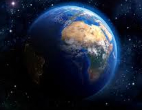

.
.
--------------------------------  ------
.
--------------------------------- La caiencia que estudia la Tierra es la geología, pero con el debate contra los terraplanistas coloquialmente se le ha llamado ---------------------------------------- globalismo.
--------------------------------- Aquí recojo las pruebas, y las ideas que dice la ciencia sobre la Tierra.
.
--------------------------------- Ideas y pruebas:
--------------------------------- A favor del globalismo:
--------------------------------- Si la Tierra fuera plana, el Sol nunca se pondría bajo el horizonte y debería ser visible en todo momento desde cualquier lugar del mundo, al igual -------------------------------------- que la luna. De modo que todos viviríamos los mismos días y las mismas noches.
--------------------------------- Los barcos que poco a poco se aproximan al puerto no solo "aparecen" fuera del horizonte, sino que parecen emerger de debajo del mar.
--------------------------------- Si miras por la ventana en un vuelo transatlántico, puede que veas la curvatura de la Tierra en el horizonte.
--------------------------------- Pudieron confirmarlo al comparar las sombras de varios palos de madera situados en diferentes lugares. Cuando el Sol estaba directamente sobre ------------------------------------ el palo, este no proyectaba sombra. Mientras tanto, en una ciudad situada a unos 800 kilómetros al norte, el palo sí que proyectaba una sombra", -------------------------------------- explica Whittaker. En caso de que la Tierra fuera plana, ambos palos deberían mostrar la misma sombra porque se colocarían en el mismo ángulo ------------------------------------- hacia el Sol. Dado que las sombras eran diferentes, los antiguos griegos determinaron que la Tierra era curva y que, por lo tanto, los palos se -------------------------------------------- encontraban en diferentes ángulos.
--------------------------------- Cualquier foto de la NASA desde el espacio, de la Tierra, demuestra que esta es redonda.
.
--------------------------------- En contra del terraplanismo:
--------------------------------- La Tierra es redonda porque no puede ser otra cosa y es que, en el sistema solar cualquier cuerpo que tenga más de 100 km de diámetro tiene ----------------------------------------- forma redondeada. Eso se debe a la fuerza de la gravedad, que actúa con la misma fuerza en todas las direcciones. Ocurre con cualquier objeto --------------------------------------- del sistema solar, tanto en un teléfono móvil como en los grandes planetas. La diferencia es que dependiendo de la masa la fuerza de la gravedad ------------------------------------- es mayor o menor. El ecuador sobresale más que los polos porqué la fuerza centrífuga es mayor, no obstante, no sobresale más porque la fuerza -------------------------------------- de la gravedad lo compensa.
--------------------------------- Cuando miramos al horizonte lo vemos plano porque solo observamos un porcentaje muy pequeño del diámetro de la Tierra.
--------------------------------- El polo magnético de la Tierra se cambia cada 100.000 años.
--------------------------------- La teoría del Big-Bang dice que, hace unos 10 o 20 mil millones de años toda la materia y energía del universo estaba comprimida en un huevo ----------------------------------------- cósmico, o bola de plasma, que estaba compuesta de partículas subatómicas y de radiación. Este estalló. Al expandirse la materia y la radiación, --------------------------------------- según la teoría, se enfrió suficiente para que se formaran los elementos químicos.
.
-------------------------------
.
.
.
.
.
.
.
.
---------------------------------------------------------------------------------------------------------- Cliquea para volver al índice: Índice
.